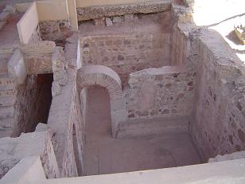
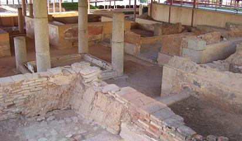
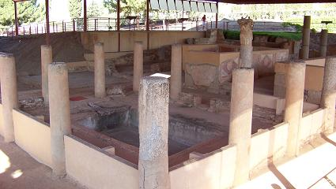
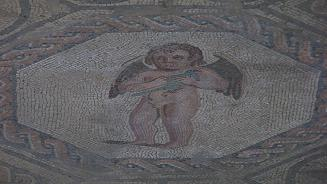
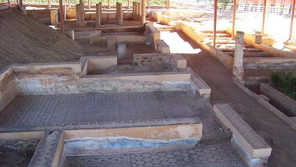

|
Casa de Mitreo
Llamada así por su proximidad a los restos aparecidos en un
solar ocupado por la plaza de toros. Sus restos están relacionados con
Mitra y algunos arqueólogos los ha relacionado con un santuario mitraico.
Los objetos encontrados se hallan depositados en el MNAR.
La hipótesis que tiene mas fuerza es que estos resto serian una domus
–casa señorial-.
También se halla a extramuros de la ciudad como la casa del Anfiteatro.
Esta datada a finales del siglo I o principio del II. También por
sus restos se puede apreciar su uso continuado así como las
rehabilitaciones necesarias para su uso.
En todas la domus destacan dos elementos: la decoración de sus estructuras
–mosaicos y pinturas- y el predominio de los espacios abiertos.
La vivienda se distribuye alrededor de tres patios para proporcionar luz y
ventilación a las habitaciones.
|
Los muros suelen realizarse con la
base y un zócalo de mampostería, sobre este muro en las esquinas o
intercalados, se dispones sillares de granito, que refuerzan y escuadran
las tapias, paredes de adobes y ladrillos. Esta pobre estructura contrasta
con la riqueza de su decoración.
Las excavaciones realizadas en la zona han descubierto una zona de baños
que supuestamente formarían parte de la casa.
A las habitaciones subterráneas se accede a través de una escalera, ambas
habitaciones estuvieron cubiertas con bóvedas y disponían de una ventana
en la pared oriental. Por su decoración y situación estas habitaciones se
debieron de utilizar como habitaciones de verano.
A mediados del siglo III por causa de un incendio parte de la casa se destruyó
y se abandono no volviéndose a restaurar. El resto de la casa se siguió
utilizándose.
|
 |
El acceso a la casa se localiza en esta zona, a través un pequeño
vestíbulo seguido de una escalera de granito que facilitan el acceso al
primer patio. Se trata de un atrio tetrástilo, con estanque revestido de
mármol donde se recogía el agua de lluvia, a través del impluvium, que
entraba por el techo compluvium; esta apertura permitía la entrada de agua
y aire. Las paredes del patio estaban revestidas con pinturas. A la
derecha se hallaría la sala de recepción o biblioteca, tablinum. Esta
habitación tiene un mosaico cosmológico y sus paredes estaban estucadas.
|
 |
 |
|
 |
 |
A
ambos lados de la entrada de la puerta se hallan dos habitaciones que
serian unas tiendas.
El mosaico cosmológico es una de las mejores obras del mundo romano.
Representa la concepción filosófica del mundo y de las fuerzas de la
naturaleza que lo rigen junto con alguna actividad humana. El mosaico se
realizo a finales del siglo II o principios del III y su autor debió formarse
en algún taller sirio. El mosaico se divide en tres parte: superior
cielo, media tierra e inferior mar. La zona superior esta rematada por un
semicírculo que le imprime un carácter sagrado. Están representadas las
figuras de Saeculum, el tiempo representado por los siglos y sus hijos;
Caelum, cielo y Chaos, el caos; Polum, el polo norte con el mundo a sus
espaldas; Tronitum, el trueno; Oriens el sol; Ocassus, selene la luna.
También incluye los vientos y las nubes: Notus, el viento el sur, con Nubs,
las nubes; Zephyrus, viento del oeste con Nebula, la niebla; Eurus, viento
del oeste y Boreas, el viento del norte.
Para descender a las personificaciones se encuentra Mons, un monte sagrado
en cuyo regazo descansa Nix, la nieve.
En la ultima división se hallan: Oceanus, el océano; Tranquilitas, el mar
en calma; Copiae, las riquezas generadas por el mar o que por el se
transportan; Pharus, el faro que ayuda a los navegantes, Navigia, la
navegación y Pontus, el mar.
En la llamada habitación de las pinturas, se encuentran en muy buen estado
las pinturas correspondientes al zócalo y a la zona media de las paredes.
Esta decoraciones se han denominado "decoraciones de Candelabros" y esta
datadas en la 2ª mitad del siglo I o inicios de II.
En marzo de 2021, en las excavaciones realizadas, se
ha recuperado un arca ferrata romana del siglo IV, una especie de caja
fuerte para guardar joyas y objetos preciosos y un tesorillo romano con
52 monedas de los siglos I y III.
|